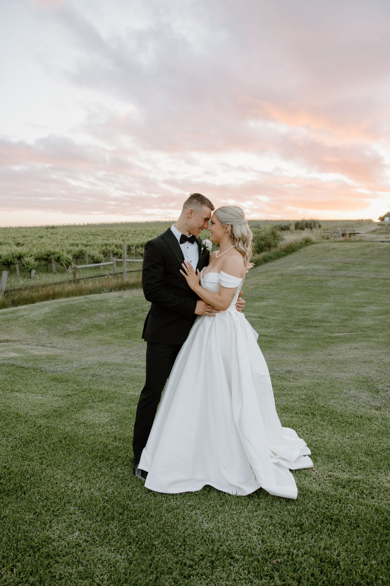
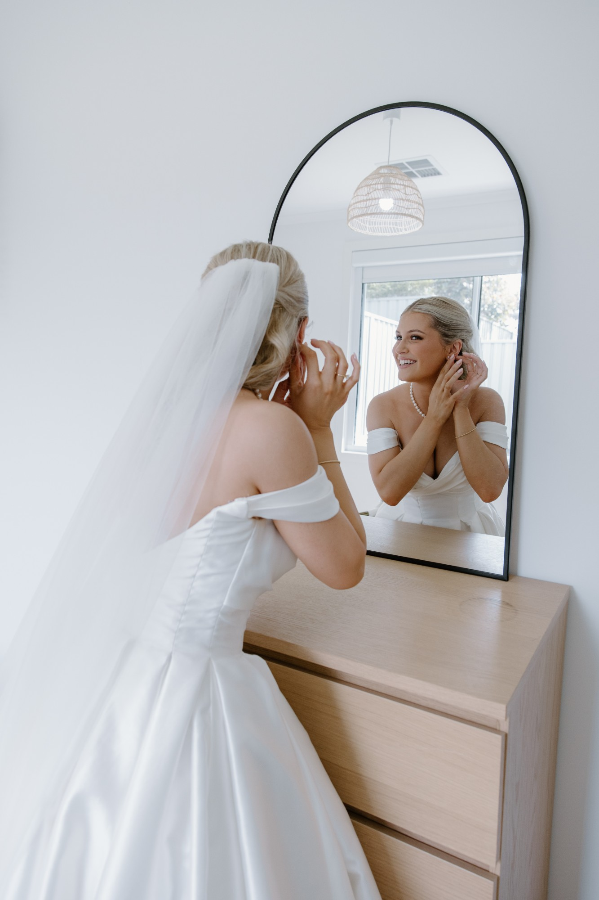
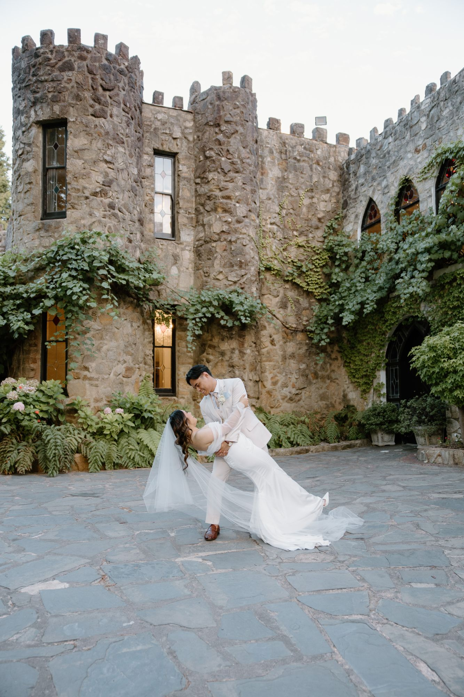
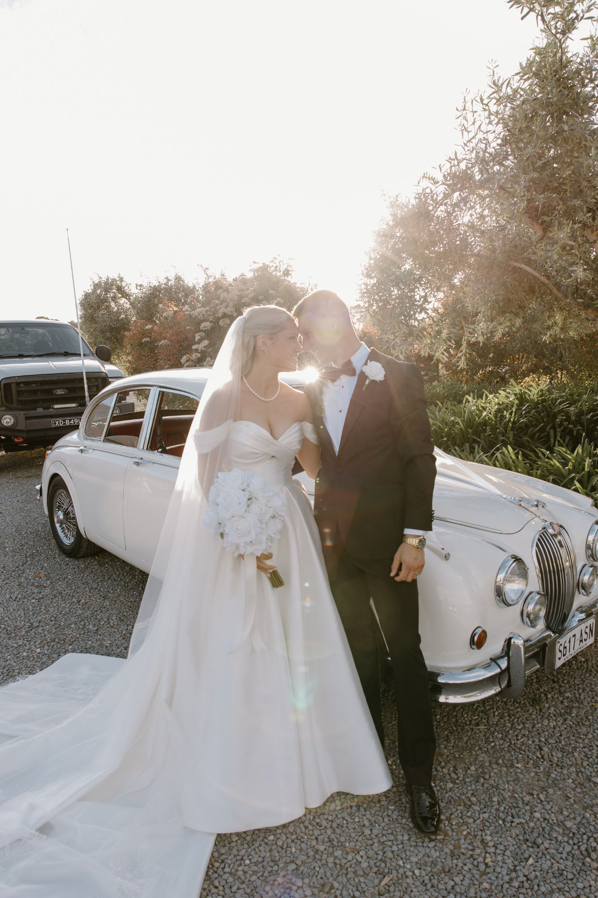
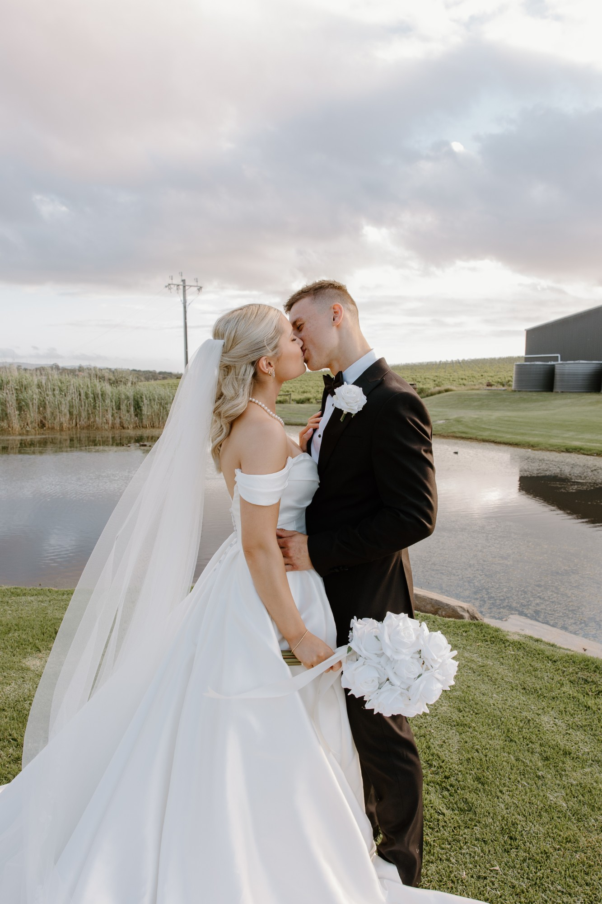

Adelaide wedding & family photographer
Photographs that feel like a Sunday afternoon.
Natural, light-filled photos of the people you love, taken slowly and in the best light of the day. Weddings, couples and families across Adelaide, from the coast to the hills.


Why Sunday Light
The best light of the week.
Sunday light is low, warm and in no hurry. It’s the light I chase, and it’s how I want your session to feel: no stiff poses and no rushing, just time together while I look for the moments in between.
I’ll guide you the whole way, from what to wear to where to stand when the sun drops. You bring your people. I’ll look after the light.
What I photograph
From the proposal to the yearly family photo.

Weddings
The whole day or just the vows. Calm, unposed and full of light.
See details
Couples
Engagements, proposals, anniversaries, or just because.
See details
Bump
Maternity sessions on the beach, in the hills or at home.
See details
Newborn
Relaxed lifestyle sessions at home in the first few weeks.
See details
Family
Beach walks and paddock afternoons. Kids and dogs welcome.
See details
Milestones
Graduations, 18ths and the days worth remembering.
See detailsRecent weddings
Vineyards, castles and a white Jaguar.






Real weddings from across Adelaide and the vineyards around it.
See the wedding galleryHow it works
Easy from the first message.
Say hello
Tell me who you are, what you’re after and roughly when. I’ll come back with dates and details.
Plan it together
We’ll choose a spot and a time. For outdoor sessions that usually means the last hour before sunset.
The session
Relaxed and unrushed. I’ll give you easy prompts, so you’re never left wondering what to do with your hands.
Your gallery
Your edited photos arrive in a private online gallery, ready to download and share.

Enquiries
Tell me what you’re planning.
Weddings, couples and families across Adelaide, from the coast to the hills.
Check my dates